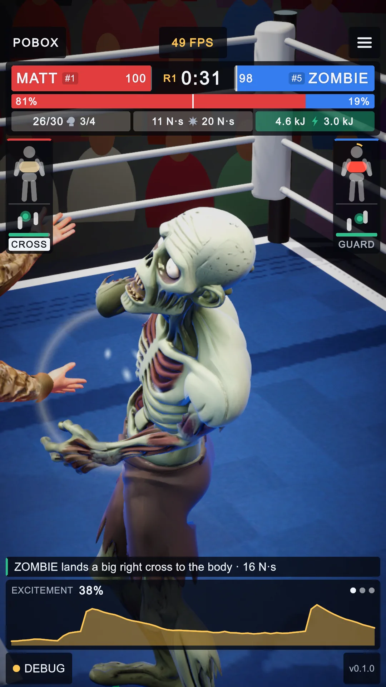
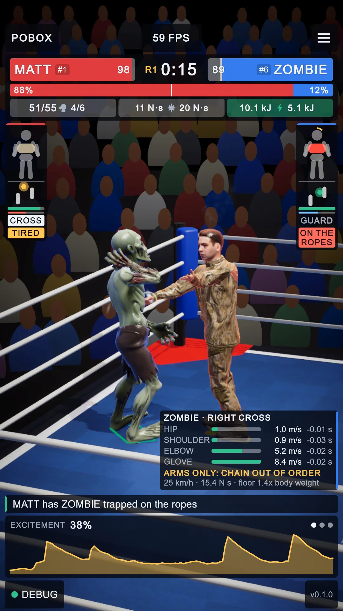
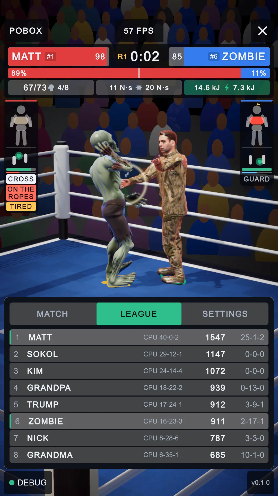
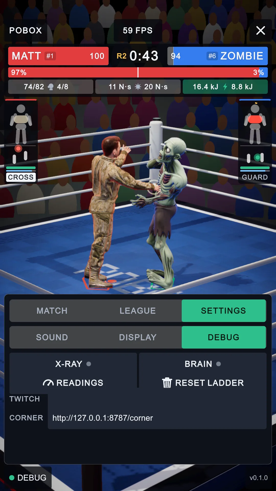
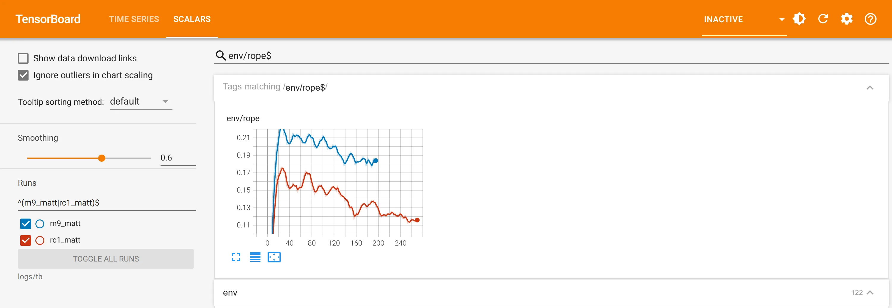
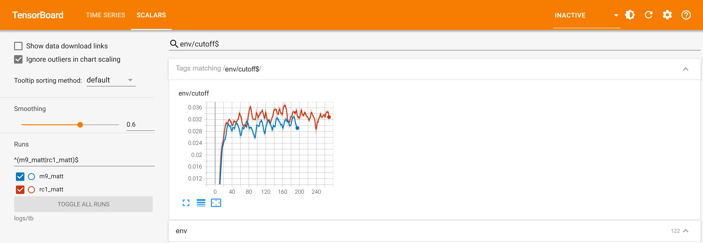
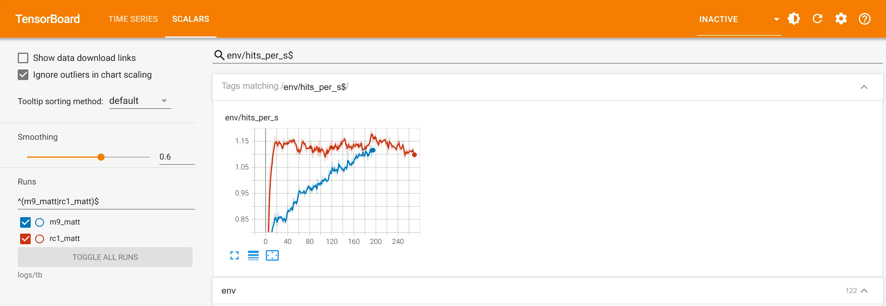

PoBox features pass, 2026-10-16 afternoon
The owner picked four features (punch card, AI cornerman, ring smarts, fight log) and asked for an Elo for every boxer from CPU bouts. All at 1080x1920, rendered by the dev script's shot-begin/shot-end. The before picture is the do-all pass's arena shot from this morning; there is no before shot of the ladder (it had six rows, KIM and SOKOL were not on it, and every row said SCRIPTED).
1. The punch card, and the ringcraft calls

BEFORE
AFTER 1 2 3- Punch card (UI/PunchCard.cs). After a clean punch of 11 N s or more (at most every 12 s), the half second before it is read back from MuJoCo: the peak speed of the hip, shoulder, elbow and glove (mj_objectVelocity, MjBoxer.Chain) and how long before the landing each came. This one is a real Zombie right cross: glove 8.4 m/s, but the shoulder peaked before the elbow and slower than the hip, so it reads ARMS ONLY. Gives way to the brain cam, the replay and the results.
- Under it: glove speed in km/h, the impulse, and the floor's hardest push through both feet in body weights (the solver's contact forces on the foot boxes).
- Ringcraft calls (Broadcast/Commentary.cs): "X has Y trapped on the ropes" after 2 s on the ropes under pressure (the HUD's
ON THE ROPES rule, now
Fighter.OnTheRopes), and "They're tied up" after 1.5 s chest to chest.
The shot was held: when the card appeared during a live bout the game was paused (timeScale 0) and the card's timer pinned, because the dev capture takes longer than the card's 4 s. The numbers on it are the live ones.
2. The ladder, rated by the CPU

AFTER 1 2 3
AFTER 4- CPU record in the middle column, from
Assets/Resources/cpu_elo.json(training/tools/elo.py). It replaces the old badge, which said SCRIPTED for six boxers whose brains were deleted in the retrofit. - The rating starts from the CPU's (LeagueTable): a new ratings file re-seeds every rating; the bouts watched on this device (the right column) keep moving it.
- Eight rows: KIM and SOKOL now have entrants (Assets/League/Entrant_KIM/SOKOL) and are on the arena's ladder.
- CORNER (settings, DEBUG): the cornerman proxy's address. In the editor it defaults to this PC; empty means the old rule-based tips. (The dark blocks round the fields are how this capture composites the panel; the layout audit passes this tab at every phone size.)
The CPU Elo (168 bouts, 6 a pair, 3 rounds of 45 s, the game's brains and punch rules, C MuJoCo 3.5.0)
| # | Boxer | Elo | W-L-D | Brain |
|---|---|---|---|---|
| 1 | MATT | 1547 | 40-0-2 | shipped |
| 2 | SOKOL | 1147 | 29-12-1 | m2_sokol |
| 3 | KIM | 1072 | 24-14-4 | m7_kim |
| 4 | GRANDPA | 939 | 18-22-2 | shipped |
| 5 | TRUMP | 912 | 17-24-1 | shipped |
| 6 | ZOMBIE | 912 | 16-23-3 | shipped |
| 7 | NICK | 787 | 8-28-6 | shipped |
| 8 | GRANDMA | 685 | 6-35-1 | shipped |
A Bradley-Terry fit of all 168 results on the Elo scale (400 points = 10 to 1), centred on 1000, so the order the bouts
ran in does not matter. One card per round in place of the game's three judges (knockdowns first, then landed punch speed, 10-10
within 4%). Every bout is in training/logs/cpu_bouts.ndjson.
3. Training: rc1_matt, ringcraft on top of m9
30 minutes (271 iterations, 4608 rings) from m9_matt, against the same seven opponents and punch rules, with the rope
charge 0.05, the cut-off pay 0.05 and the new clinch pay 0.1 (envs/boxing.py, --clinch-w). Blue is m9 (the baseline,
ringcraft only measured), red is rc1. Both start at step 0 on TensorBoard's axis.
| Last 20 iterations | m9_matt | rc1_matt | Change |
|---|---|---|---|
| On the ropes under pressure (a step) | 0.182 | 0.115 | -37% |
| Cutting the ring off (a step) | 0.031 | 0.034 | +10% |
| Punches landed a second | 1.11 | 1.11 | same |
| Punches taken a second | 0.435 | 0.348 | -20% |
| Falls an episode | 0.018 | 0.016 | -11% |
| Clinch (a step) | not measured | 0.000 | never paid |
Chart 1: time on the ropes

Chart 2: cutting the ring off

--ropes-start) would give it more to work with.Chart 3: punches landed a second

The exam (C MuJoCo 3.5.0, 12 rounds against each opponent, 60 knockdowns)
| Line | m9_matt | rc1_matt |
|---|---|---|
| footing | pass, 0.00 falls/min | pass, 0.00 falls/min |
| attack | pass, 1.55/s at 4.5 m/s | pass, 1.42/s at 5.0 m/s |
| guard | pass, stops 0%, takes 0.04/s | pass, stops 14%, takes 0.08/s |
| chin | pass, 0.00/min | pass, 0.00/min |
| getting up | pass, 58/60 in 1.7 s | pass, 58/60 in 1.7 s |
| carrying on | FAIL, 52/58 (mark 90%) | FAIL, 52/58 (mark 90%) |
Neither is promoted: both miss "carrying on" by one get-up (52 of 58 is 89.7%). That line is the hand-over from the get-up brain, which neither run trained; it is the next thing to fix, not ringcraft. The clinch was never paid: it pays only a boxer whose daze is past half of where its legs go, and Matt is almost never hurt (legs taken 0.00/min). Teaching it needs episodes that start dazed (a hurt-start share in the handover bank).